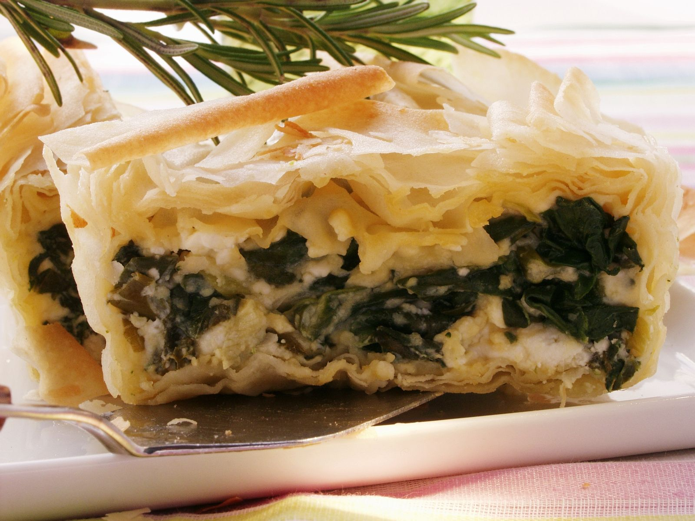

Spinach in puff pastry

Spinach in puff pastry is a delicious appetizer or main dish. With cheese, this can already make properly full.
Of course, you can also distort this dish hot and cold.
- finished puff pastry
- spinach
- goat cheese
- preheat oven to 200 degrees
- spread the puff pastry on a baking sheet
- spread the spinach lengthwise and add the cheese
- fold the whole thing together and put in the oven for 25 min